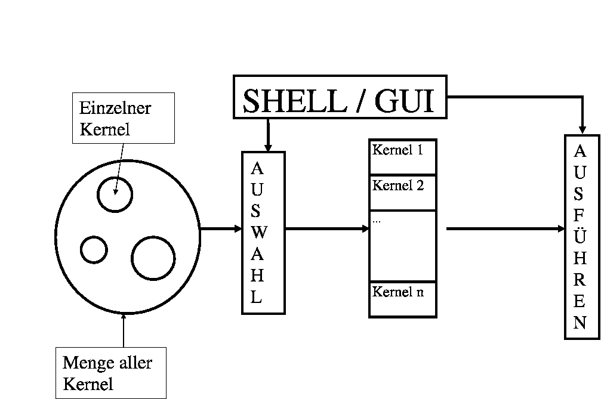
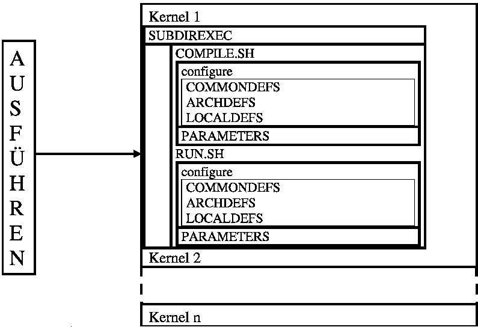

General informations about the BenchIT GUI
What is BenchIT?
BenchIT is a program to support your scientific performance measurements. It provides a clear interface and let you collate your system to others.
More information under www.benchit.org.
BenchIT - structure
Structure of a kernel
Every kernel must be in the kernel directory of BenchIT and needs 2 Scripts: COMPILE.SH and RUN.SH. Also it needs the sourcefiles in the same directory.
Selecting a kernel
BenchIT supports the selecting of different kernels and their starting by the b-care-shell and the GUI.

Also you can select whether you want to compile the kernel, run it or do both.
Starting a kernel
After you've selected the kernels, you want to start, a script is generated, which calls all the selected scripts.
Those call different scripts provided by BenchIT.

Systemproperties
JAVA version
1.4 or higher.
RAM
128 mb
Directories
Sourcecode : gui/src
Library : gui/bin/BenchIT.jar
Configuration Files : gui/cfg
Start Directory : gui/bin
How to start
Under UNIX : switch to start directory, start ./GUI.sh
Under Windows : switch to start directory, start GUI.bat
You may also start the jar, by using java -jar BenchIT.jar, this may have some problems with settings.
If you want to connect to the database, start the AddKeyToKeyStore script for your Operating System.
(see Databasemode)
GUI modes
General contents:
Options
Console